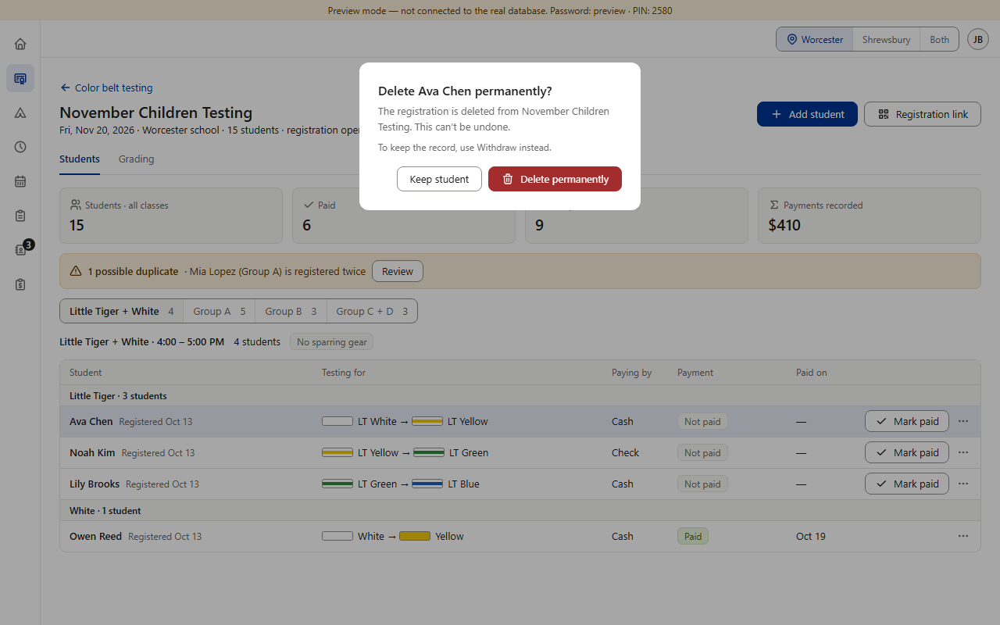
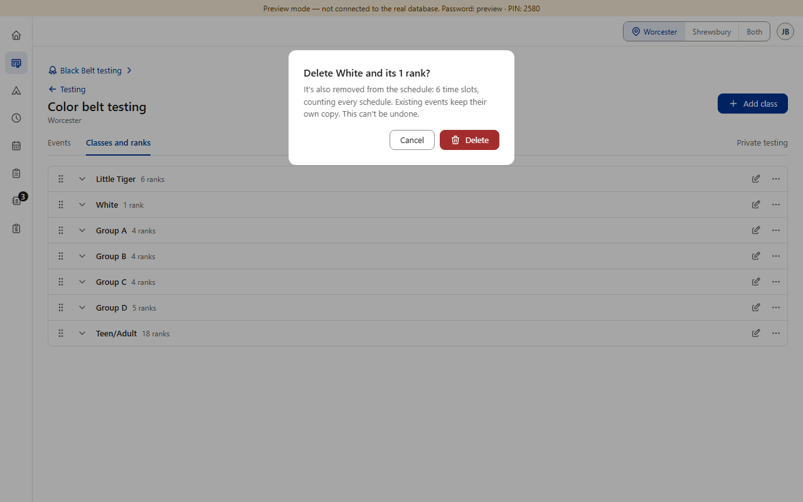
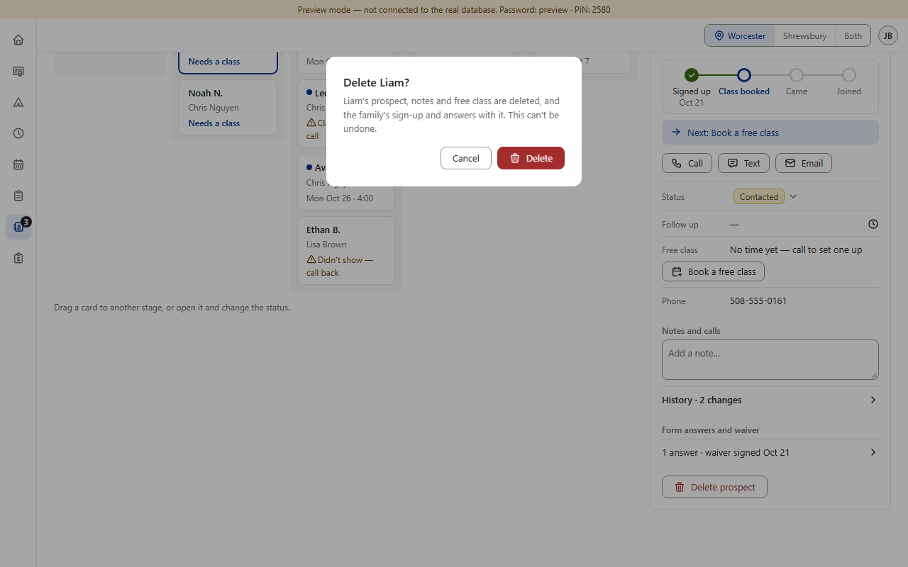
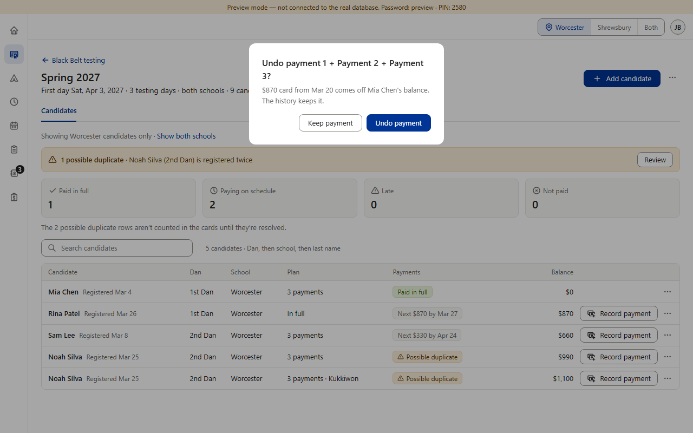
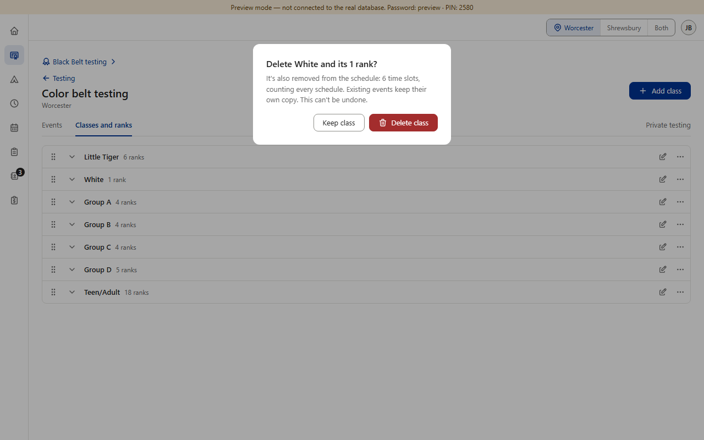
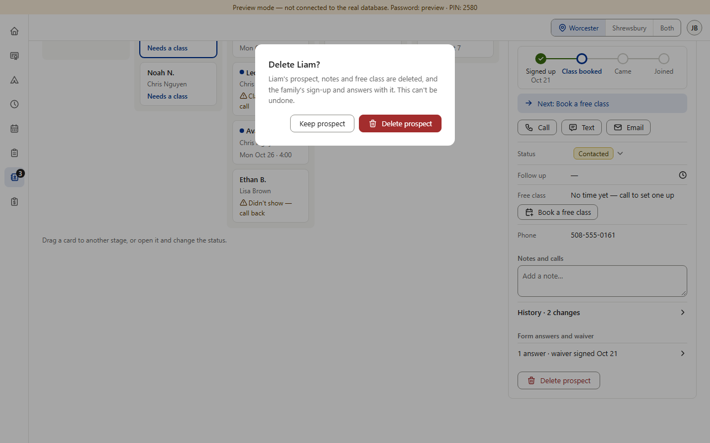
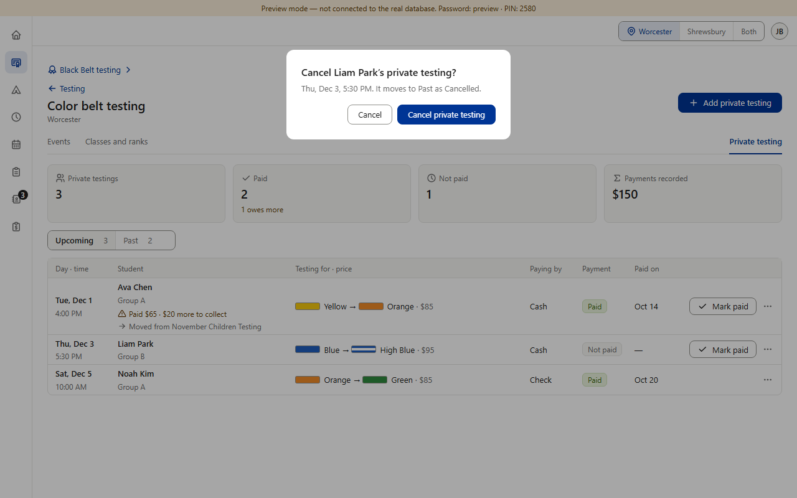

Today · the button that changes nothing





Same in every box pictured, and staying that way: a question naming the person or thing, a line saying exactly what happens, the button that changes nothing on the left and selected first, the other button on the right (red only when something is gone for good — item 7).
Option B (recommended) · and why not C




Copies what's already there: the words most roster boxes already use. Only the button words change. Pictures 7–10 are the real boxes with their button words changed; nothing in the app was changed.